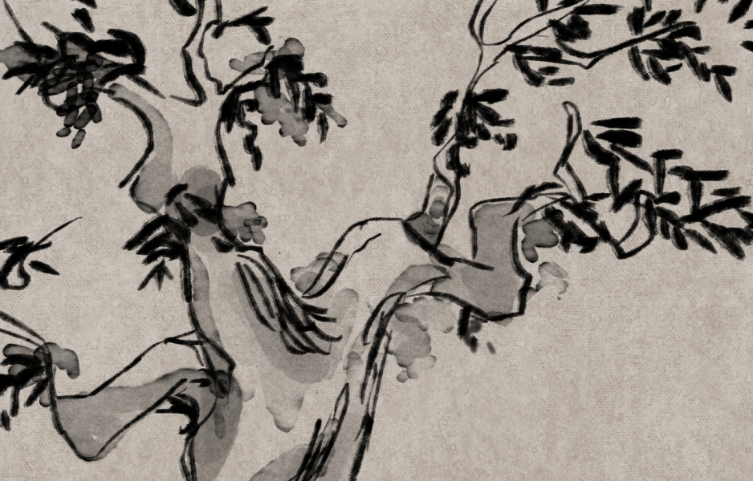
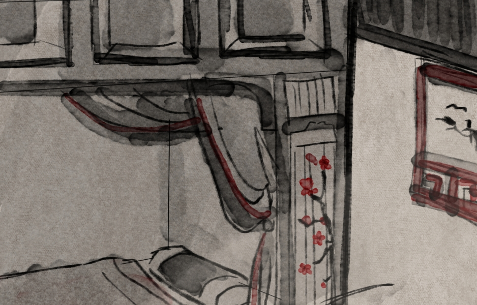

中
經
現
文
主頁
地圖卡
道具卡
譚
器
異志
角色卡
劇本
劇本
進入作祟！
你知道嗎？在我們之中出了一個叛徒......
若是
異志檢定
成功，則從
探索階段
進入到
作祟階段
。
玩家們會根據「異志檢定成功的異志卡牌」或是「進行異志檢定成功的玩家所處的地圖」來決定要進行哪個劇本。
《連瑣》
看劇本

「玄夜淒風卻倒吹，流螢惹草複沾帷。 幽情苦緒何人見，翠袖單寒月上時。」 連家大小姐連瑣和楊生的人鬼戀情，便在這場對詩中展開。 此篇作祟劇本改編自聊齋卷三第十五篇－－《連瑣》。 原文故事描述一對人鬼戀人相戀至助鬼復活終成眷屬，過程遇上楊生的友人攪局、鬼吏逼婚， 而後又藉由楊生的友人化解鬼吏追擊的危機，最後楊生和連瑣訂下百日之約，在那青鳥樹下以人類的面貌約定終生。 其中「鬼吏迫婚」的橋段非常具有戲劇性，強調了其他故事鮮少提到的「人助鬼」情節， 在這裡便將此劇情與特點放大並加以改寫：鬼吏為了讓連瑣永遠在自己身邊，會派出兩個鬼兵干擾連瑣的復甦儀式； 至於楊生與他的友人為了可以讓連瑣順利復活，便需要想盡辦法逃離鬼吏狂愛的追殺， 治療因為貢獻精氣而虛弱的楊生，最後一同見證連瑣的復甦。
《封三娘》
看劇本

《封三娘》的原劇情是狐妖封三娘與大家閨秀范十一娘互相愛慕的同性愛情故事。 故事中封三娘為了自己的修煉選擇離開對方，而十一娘不知道對方是狐妖， 只是不情願地聽從她的安排嫁給了書生孟安仁，之後卻又為了逼迫封三娘留下， 要求自己的丈夫孟安仁強上封三娘、逼她做妾。這場姻緣在還沒有開始前，就斷在那個時代女性難由己意的困境中。 因此在改編這段劇情時，額外給予了封三娘行動的機會。在遊戲裡進入作祟階段後，封三娘會委託正方玩家幫忙尋找三種藥材，幫助自己加速修煉成仙，早日回來和十一娘相聚。 反方玩家則是擔任十一娘的丈夫書生孟安仁，孟安仁為了協助苦苦思念封三娘的十一娘， 必須尋找藥材迷昏封三娘，並將其帶往十一娘處，好全了這個痴人的念想。
《妖術》
看劇本
此篇作祟劇本改編自聊齋誌異的《妖術》。 原文故事描述主角遇到招搖撞騙的道士，給其算命卻不願付錢化解道士聲稱的劫難， 因此遭到怪物追殺，最後靠著自身的勇猛與智慧， 不僅成功保住一命還將可能已經殺人無數的道士送往官府審判。 其中道士的妖術非常特別且有趣，因此這篇劇本針對了道士的角色並描寫了他的過往， 猜測了道士利用自己強大的能力賺錢前可能的遭遇。在此劇本中的反方會扮演年輕時的道士， 使用效果各異的妖術，而其餘玩家必須靠著智慧生存，甚至提前讓道士接受審判，避免他犯下未來的罪行。
成員
劇本組
陳傳佳
陳詩淇
巫煥棋
譚器組
李維
陳智成
石子佳
羅鈺翔
美術組/網頁組
黃尹宣
陳詩淇
拍攝組
李維
黃尹宣
陳智成
陳詩淇
陳科源
後製組/錄音組
陳傳佳
李維
©
中國經典與現代文明。第二組桌遊組。期末展演。
All Rights Reserved. Designed by
HTML Codex